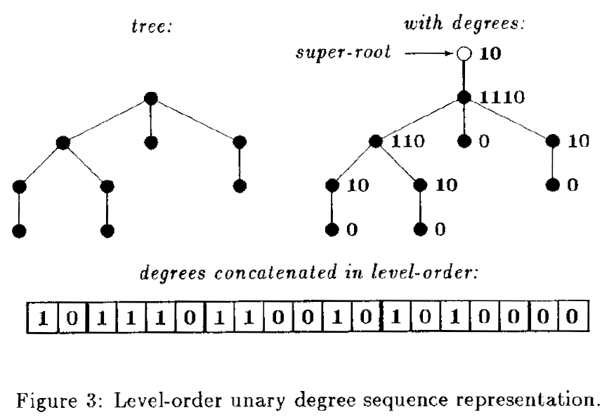

Space-efficient Static Trees and Graphs
Guy Jacobson
(presented by Vaibhav Sagar)
% @vbhvsgr
Data structures take up too much space!
A pointer to n possible locations needs log2n bits
Data structures with n items need O(nlog2n) space for pointers!
The rent is too damn high!

Unlabeled binary trees only need 2n + o(n) bits
One approach: balanced parentheses?
Better space usage, but inefficient to use
How do we get efficient space usage and efficient operations?
Metrics for space and time
- Space: measured in bits
- Time: measured in bit-accesses
Ranking and selection
Rank
ranke(S, i): The number of es at or before index i
Select
selecte(S, i): The index of the ith e
Time complexity
- O(log2n) at the time of writing, O(1) now!
More resources
Rank/Select beyond bitmaps
Trees
Implicit bitmap

Level-order binary marked
Level-order binary marked
- left-child(m) = 2 ⋅ rank(m)
- right-child(m) = 2 ⋅ rank(m) + 1
- parent(m) = select(⌊m/2⌋)
Level-order unary degree sequence

Level-order unary degree sequence
- first-child = select0(rank(m)) + 1
- next-sibling = m + 1
- parent(m) = select(rank0(m))
Graphs
Parentheses balancing
Bounded pagenumber graphs
Bounded pagenumber graphs
- node-to-edge(m) = rank0(select(m) + 1)
- edge-to-node(e) = rank(select0(e))
Succinct data structures today
Semi-indexing
Compact Data Structures

Thanks!
This presentation
These slides are at https://vaibhavsagar.com/presentations/space-efficient-static-trees-graphs